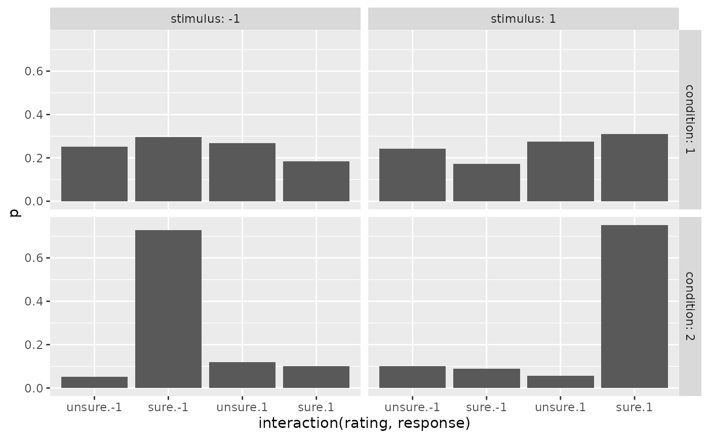
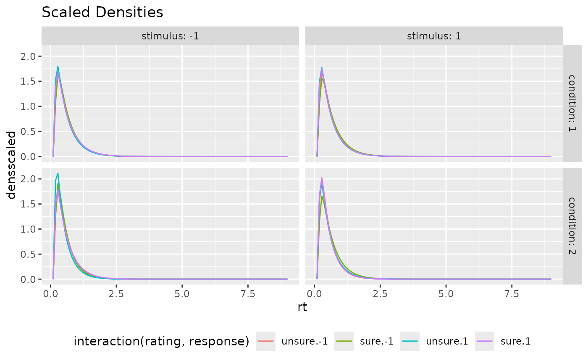
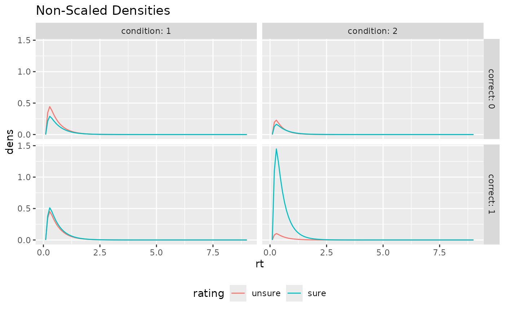

Prediction of confidence rating and response time distribution for sequential sampling confidence models
Source:R/predictRTConf.R
predictRTConf.RdpredictConf predicts the categorical response distribution of
decision and confidence ratings, predictRT computes the predicted
RT distribution (density) for the sequential sampling confidence model
specified by the argument model, given specific parameter constellations.
This function calls the respective functions for diffusion based
models (dynWEV and 2DSD: predictWEV) and race models (IRM, PCRM,
IRMt, and PCRMt: predictRM).
Usage
predictConf(paramDf, model = NULL, maxrt = 15, subdivisions = 100L,
simult_conf = FALSE, stop.on.error = FALSE, .progress = TRUE)
predictRT(paramDf, model = NULL, maxrt = 9, subdivisions = 100L,
minrt = NULL, simult_conf = FALSE, scaled = FALSE, DistConf = NULL,
.progress = TRUE)Arguments
- paramDf
a list or dataframe with one row. Column names should match the names of the respective model parameters. For different stimulus quality/mean drift rates, names should be
v1,v2,v3,.... Differentsparameters are possible withs1,s2,s3... with equally many steps as for drift rates (same forsvparameter in dynWEV and 2DSD). Additionally, the confidence thresholds should be given by names withthetaUpper1,thetaUpper2,...,thetaLower1,... or, for symmetric thresholds only bytheta1,theta2,....- model
character scalar. One of "2DSD", "dynWEV", "IRM", "PCRM", "IRMt", or "PCRMt".
- maxrt
numeric. The maximum RT for the integration/density computation. Default: 15 (for
predictConf(integration)), 9 (forpredictRT).- subdivisions
integer(default: 100). ForpredictConfit is used as argument for the inner integral routine. ForpredictRTit is the number of points for which the density is computed.- simult_conf
logical, only relevant for dynWEV and 2DSD. Whether in the experiment confidence was reported simultaneously with the decision, as then decision and confidence judgment are assumed to have happened subsequent before response and computations are different, when there is an observable interjudgment time (then
simult_confshould be FALSE).- stop.on.error
logical. Argument directly passed on to integrate. Default is FALSE, since the densities invoked may lead to slow convergence of the integrals (which are still quite accurate) which causes R to throw an error.
- .progress
logical. If TRUE (default) a progress bar is drawn to the console.
- minrt
numeric or NULL(default). The minimum rt for the density computation.
- scaled
logical. For
predictRT. Whether the computed density should be scaled to integrate to one (additional columndensscaled). Otherwise the output contains only the defective density (i.e. its integral is equal to the probability of a response and not 1). IfTRUE, the argumentDistConfshould be given, if available. Default:FALSE.- DistConf
NULLordata.frame. Adata.frameormatrixwith column names, giving the distribution of response and rating choices for different conditions and stimulus categories in the form of the output ofpredictConf. It is only necessary, ifscaled=TRUE, because these probabilities are used for scaling. Ifscaled=TRUEandDistConf=NULL, it will be computed with the functionpredictRM_Conf, which takes some time and the function will throw a message. Default:NULL
Value
predictConf returns a data.frame/tibble with columns: condition, stimulus,
response, rating, correct, p, info, err. p is the predicted probability of a response
and rating, given the stimulus category and condition. info and err refer to the
respective outputs of the integration routine used for the computation.
predictRT returns a data.frame/tibble with columns: condition, stimulus,
response, rating, correct, rt and dens (and densscaled, if scaled=TRUE).
Details
The function predictConf consists merely of an integration of
the reaction time density of the given model, {d*model*}, over the response
time in a reasonable interval (0 to maxrt). The function predictRT wraps
these density functions to a parameter set input and a data.frame output.
For the argument paramDf, the output of the fitting function fitRTConf
with the respective model may be used.
Note
Different parameters for different conditions are only allowed for drift rate,
v, drift rate variability, sv (in dynWEV and 2DSD), and process variability
s. All other parameters are used for all conditions.
Examples
# Examples for "dynWEV" model (equivalent applicable for
# all other models (with different parameters!))
# 1. Define some parameter set in a data.frame
paramDf <- data.frame(a=1.5,v1=0.2, v2=1, t0=0.1,z=0.52,
sz=0.3,sv=0.4, st0=0, tau=3, w=0.5,
theta1=1, svis=0.5, sigvis=0.8)
# 2. Predict discrete Choice x Confidence distribution:
preds_Conf <- predictConf(paramDf, "dynWEV", maxrt = 25, simult_conf=TRUE)
head(preds_Conf)
#> condition stimulus response correct rating p info err
#> 1 1 1 1 1 1 0.27539594 OK 8.558189e-06
#> 2 2 1 1 1 1 0.05679937 OK 1.086692e-04
#> 3 1 -1 1 0 1 0.26818285 OK 6.614275e-06
#> 4 2 -1 1 0 1 0.11958254 OK 1.813805e-06
#> 5 1 1 -1 0 1 0.24162008 OK 2.507387e-05
#> 6 2 1 -1 0 1 0.10124713 OK 1.094999e-05
# 3. Compute RT density
preds_RT <- predictRT(paramDf, "dynWEV") #(scaled=FALSE)
# same output with default rt-grid and without scaled density column:
preds_RT <- predictRT(paramDf, "dynWEV", maxrt=5, subdivisions=200,
minrt=paramDf$tau+paramDf$t0, simult_conf = TRUE,
scaled=TRUE, DistConf = preds_Conf)
head(preds_RT)
#> condition stimulus response correct rating rt dens densscaled
#> 1 1 1 1 1 1 3.100000 0.000000e+00 0.000000e+00
#> 2 1 1 1 1 1 3.109548 6.167150e-06 2.239376e-05
#> 3 1 1 1 1 1 3.119095 4.832921e-03 1.754899e-02
#> 4 1 1 1 1 1 3.128643 3.768649e-02 1.368448e-01
#> 5 1 1 1 1 1 3.138191 9.891379e-02 3.591694e-01
#> 6 1 1 1 1 1 3.147739 1.707602e-01 6.200533e-01
# \donttest{
# produces a warning, if scaled=TRUE and DistConf missing
preds_RT <- predictRT(paramDf, "dynWEV",
scaled=TRUE)
#> scaled is TRUE and DistConf is NULL. The rating distribution will be computed, which will take additional time.
# }
# \donttest{
# Example of visualization
library(ggplot2)
preds_Conf$rating <- factor(preds_Conf$rating, labels=c("unsure", "sure"))
preds_RT$rating <- factor(preds_RT$rating, labels=c("unsure", "sure"))
ggplot(preds_Conf, aes(x=interaction(rating, response), y=p))+
geom_bar(stat="identity")+
facet_grid(cols=vars(stimulus), rows=vars(condition), labeller = "label_both")

ggplot(preds_RT, aes(x=rt, color=interaction(rating, response), y=densscaled))+
geom_line(stat="identity")+
facet_grid(cols=vars(stimulus), rows=vars(condition), labeller = "label_both")+
theme(legend.position = "bottom")+ ggtitle("Scaled Densities")

ggplot(aggregate(dens~rt+correct+rating+condition, preds_RT, mean),
aes(x=rt, color=rating, y=dens))+
geom_line(stat="identity")+
facet_grid(cols=vars(condition), rows=vars(correct), labeller = "label_both")+
theme(legend.position = "bottom")+ ggtitle("Non-Scaled Densities")

# }
# Use PDFtoQuantiles to get predicted RT quantiles
head(PDFtoQuantiles(preds_RT, scaled = FALSE))
#> # A tibble: 6 × 7
#> condition stimulus response correct rating p q
#> <int> <dbl> <dbl> <dbl> <fct> <dbl> <dbl>
#> 1 1 -1 -1 1 unsure 0.1 0.190
#> 2 1 -1 -1 1 unsure 0.3 0.370
#> 3 1 -1 -1 1 unsure 0.5 0.549
#> 4 1 -1 -1 1 unsure 0.7 0.729
#> 5 1 -1 -1 1 unsure 0.9 1.18
#> 6 1 -1 -1 1 sure 0.1 0.280